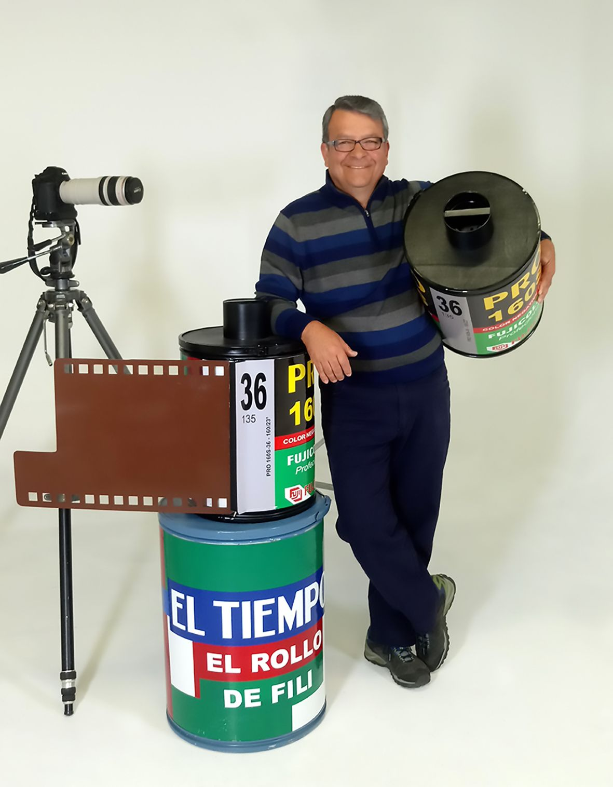
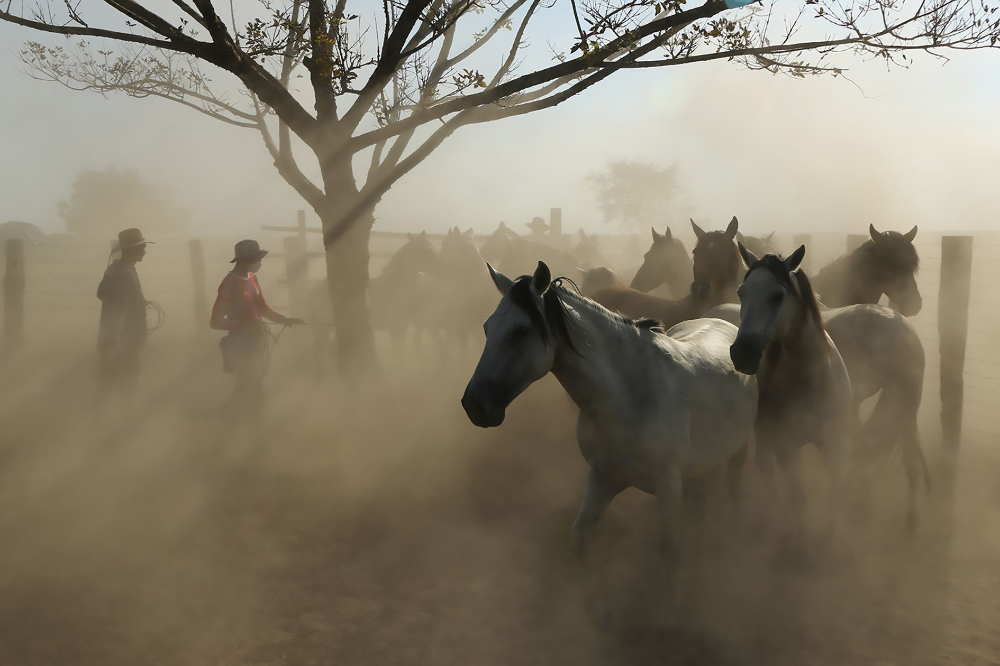
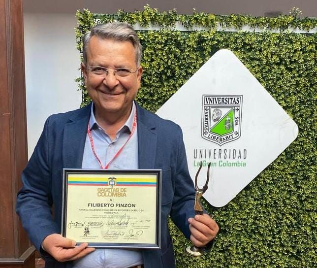

FILIBERTO PINZÓN FOTÓGRAFO DOCUMENTAL
LA OTRA
COLOMBIA
Historias reales. Rostros auténticos.
Conferencias, proyectos editoriales, exposiciones y alianzas para contar la Colombia que merece ser recordada.

El Maestro
Filiberto Pinzón
Nacido en Bogotá y chaguaniceño de corazón, Filiberto Pinzón ha dedicado más de cuatro décadas a documentar la diversidad humana, cultural y natural de Colombia.
Su trayectoria comenzó en 1974 en el periódico El Siglo y continuó en la Casa Editorial El Tiempo, donde durante más de treinta años trabajó como fotógrafo y reportero gráfico. Sus imágenes fueron publicadas en algunas de las revistas más reconocidas del país, convirtiéndose en testigo de territorios, transformaciones y generaciones de colombianos.
Pero más allá de los medios, su trabajo siempre ha estado guiado por una convicción sencilla: la fotografía es una forma de preservar la memoria.
De esa mirada nació El Rollo de Fili, un proyecto documental construido desde los caminos, los pueblos, los oficios, las tradiciones y las historias que rara vez ocupan los grandes titulares. A través de sus recorridos ha registrado la riqueza de un país que se revela mejor desde la cercanía, la observación y el encuentro humano.
Su archivo no es únicamente una colección de imágenes. Es el resultado de miles de kilómetros recorridos, innumerables conversaciones y una vida dedicada a observar aquello que merece ser recordado.
Hoy continúa viajando, fotografiando y narrando historias con la misma pasión de sus inicios, convencido de que las historias más valiosas siguen esperando lejos de las rutas habituales.
"Cada fotografía tiene una historia que contar. Mi manera de agradecer, comprender y compartir la Colombia que he tenido el privilegio de recorrer."
Inicia su trayectoria en medios de comunicación en el periódico El Siglo, en Bogotá.
Ingresa a la Casa Editorial El Tiempo, donde desarrollaría gran parte de su carrera como fotógrafo y reportero gráfico.
El Rollo de Fili se consolida como una serie documental dedicada a recorrer y narrar la Colombia profunda.
Crea Los Párvulos de Fili, un espacio de formación fotográfica construido desde la práctica y el aprendizaje en campo.
Continúa documentando Colombia, ampliando un archivo visual construido durante más de cuatro décadas de viajes e historias.
Tras la ruta
Llegamos a cualquier lugar
Más de cuatro décadas recorriendo Colombia por carretera, río, montaña y sendero. Un trabajo construido desde la cercanía con los territorios y el deseo permanente de documentar la diversidad humana y natural del país.
Portafolio
La Otra Colombia
Un archivo documental construido durante más de cuatro décadas de viaje, cámara en mano, por los territorios, los oficios y los rostros que rara vez ocupan los grandes titulares.
El Rollo de Fili
Una serie documental emitida por CityTV y El Tiempo Televisión
Más de cuatro décadas recorriendo Colombia convertidas en historias audiovisuales sobre las personas, los territorios y las tradiciones que construyen el país.

Episodios destacados
Historias que han conectado con miles de espectadores en distintas regiones de Colombia.
Un archivo visual del país
Colombia, recorrida región por región
Más de mil pueblos visitados a lo largo de más de cuatro décadas de viaje, cámara en mano, por las distintas regiones de Colombia.
Andes y territorio cafetero
Pueblos coloniales, páramos y la vida campesina de la Colombia andina.
Orinoquía y Amazonía
Los llanos, sus jinetes, y la biodiversidad de la selva colombiana.
Caribe y Pacífico
Costas, ríos y comunidades que guardan la memoria del país profundo.
Lo que nos mueve
Principios de El Rollo de Fili
Patrimonio
Documentamos y preservamos la identidad cultural y natural de Colombia.
Autenticidad
Historias reales, contadas desde el respeto y la escucha activa.
Impacto
Inspiramos conciencia y orgullo por nuestro país a través de la imagen.
Colaboración
Abiertos a instituciones y marcas que creen en el poder de las historias auténticas.
Reconocimientos
Una trayectoria respaldada

Mejor reportero gráfico de Colombia
Reconocimiento a la trayectoria y calidad del trabajo fotográfico y periodístico de Filiberto Pinzón.
Segundo lugar — Mejor Campaña Digital de Turismo por País
Entre más de 1.700 participantes de la región en la categoría de turismo digital.
Nominación — Mejor Nuevo Formato
Nominación por "El Rollo de Fili" en uno de los reconocimientos más importantes de la televisión colombiana.
Nominación — Categoría Crónica
Nominación en uno de los premios de periodismo más prestigiosos del país.
Libros publicados
Prensa y medios
Alianzas y colaboraciones
Instituciones y organizaciones que han confiado en nuestro trabajo
Contacto
Construyamos la próxima historia
Si tienes una historia que merece ser contada, una publicación que documentar o una exposición que desarrollar, conversemos.